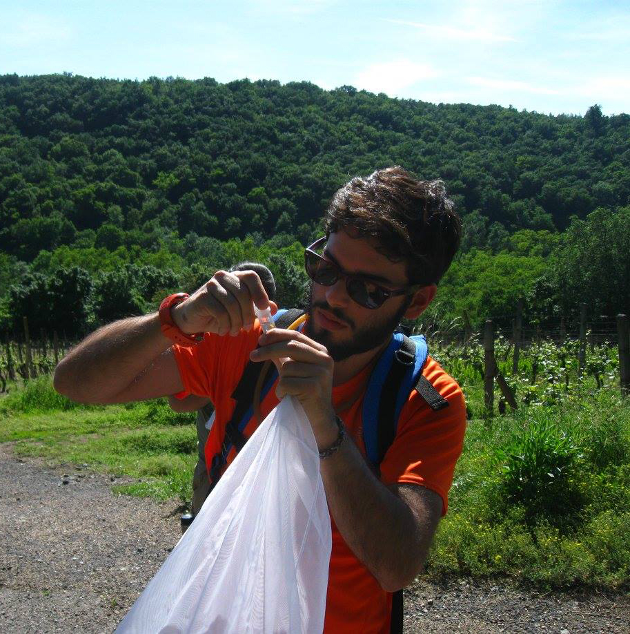

I am an ecologist who uses molecular tools to determine the species composition of the insect fauna from diverse habitats, working on improving the protocols for metabarcoding with special focus on a posteriori taxonomical examination of the sample, and on giving an additional use of the genetic information provided by metabarcoding beyond the standard species detention aim. I am currently a PhD student at the Department of Bioinformatics and Genetics at the Naturhistoriska Riksmuseet (Swedish Museum of Natural History) in Stockholm.
I moved from Madrid to Stockholm on September 2015 to be part of the Ronquist lab to work on one of the projects of the BIG4 consortium. I graduated in Biology (specialized in ecology and zoology) at the Complutense University of Madrid and I got a MSc in Evolutionary Biology from the same university. During the last year of the bachelor I did an internship at the Depatment of Zoology with Prof. Fernando Pardos at the university, in collaboration with the University of Seville, studying spatial ecology of meiofauna. For three years (last year of bachelor, during my master and one year after it) I worked with polyclad flatworms at the National Museum of Natural Sciences in Madrid, under the supervision of Dr. Carolina Noreña. Our research was primarly focus on the diversity of the group in the coasts of the Iberian Peninsula, but also on their phylogeny and other evolutionary processes.